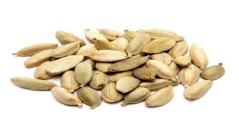
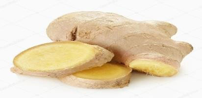
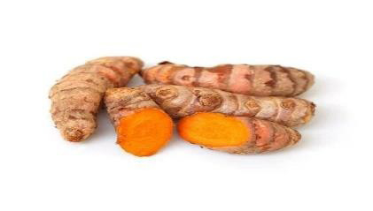
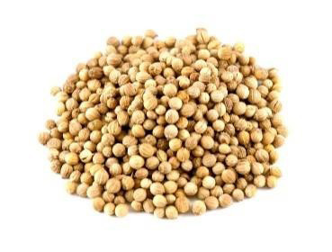

Food and Human Nutrition
Form Two
Table 1.1: Type of spice, description and dishes to which they can be added
Type of spice
Description
Dishes
Cinnamom
Dried barks
Pilau, roasted chicken and tea

Cardamom
Dried seeds
Pilau, buns, tea and chicken curry

Ginger
Root
Fish stew, biscuits and buns

Turmeric
Root
Yellow rice and curries

Coriander
Dried seeds
Curries and stews